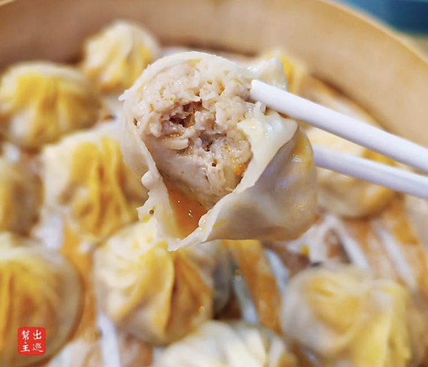

Obviously I can never get enough of savory meat filling encased in carbs lol. So I had to continue my day with soup dumplings (小笼汤包, xiao long tang bao).
Soup dumplings consist of a small ball of pork filling swimming in soup and wrapped in a thin dumpling wrapper. The ones at Jia Jia Tang Bao come with a variety of fillings like shrimp, crab, mushroom, and bamboo shoots in addition to perfectly spiced ground pork. Each dumpling is the perfect size and bursting with a variety of flavors. This is a great way to enjoy a taste of Shanghai and get great value for your money. I highly recommend stopping by for a light meal or quick snack during any time of the day.